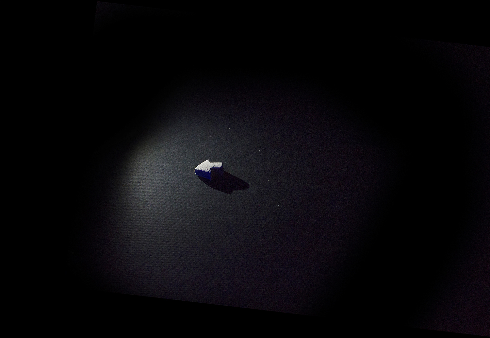
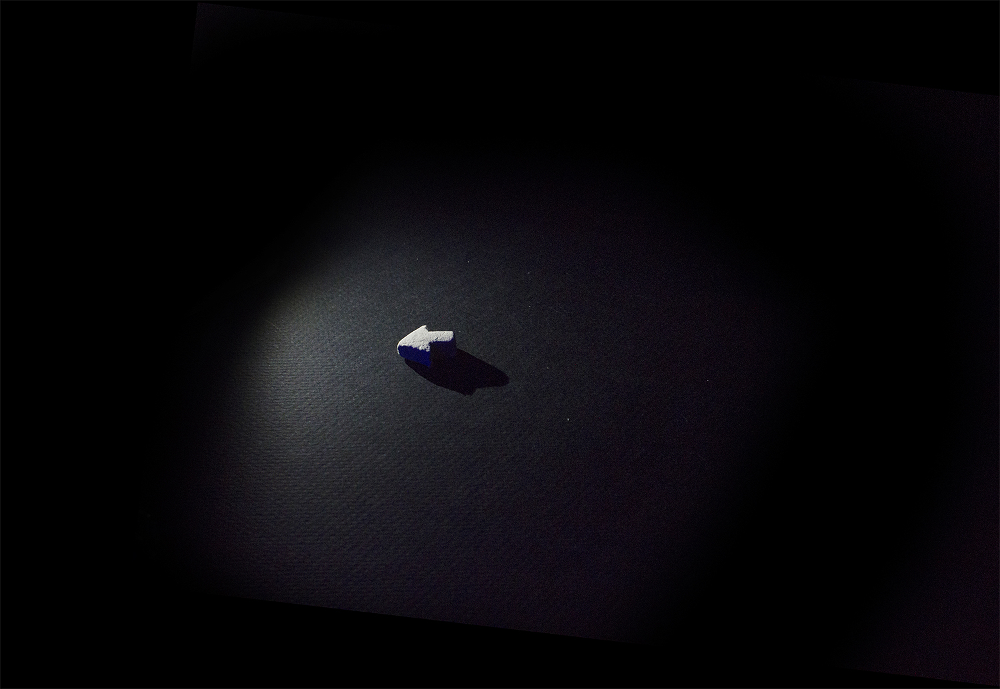

filmmaker
I maintained a practice, in high school, of twisting whatever school assignments I could into film projects. In this way, I was able to marry my creative ambitions with my “day job”. The project highlighted below - “Water Can Float a Boat, Water Can Sink a Boat” - was my group's response to an AP Chinese assignment which called for a short dialogue to be performed in class. My group agreed to let me write a short movie for us, which we would show in lieu of a reading. After the script was finished and translated, I made several unavailing attempts at getting five indifferent 18 year olds in the same place at the same time. Eventually, I said to myself: wouldn’t it just be easier to try animating this on my computer? (pause for laughter).
One joy of this project - second to seeing it in its finished state, of course - came with creating an effective one-man workflow. Once I had recorded the voice track with Michelle (the only remaining group member who, at that point, still maintaned a degree of enthusiasm for the short), I drew a thumbnail of each shot in order to make sure I was only creating footage I'd ultimately use. The process of "building" digital characters and sets took me through Illustrator and Photoshop, and landed me in After Effects. The real work began once I had made comps for each character, each character's mouth, and the central set. It became apparent early on that working concurrently through each big task would be ideal. I was able to keep my eyes fresh by switching between lip-syncing, key-framing gestures, blocking characters, and arranging the camera any time I caught myself making arbitrary choices. When all was said and done, the five minutes I present below took me about three months to finish. It is imperfect, certainly, but I’m proud of the industriousness it originated in and demanded, as I am of the melodramatic atmosphere and charmingly coy metaphors it articulates.
The remaining selection of short movies are less ambitious than “Water Can Float a Boat”, and some come more truly from the work of a group. But in each case, I had something of substance on my mind, or some formal itch to scratch. Each item opens in a new tab - and will be happy to wait while you browse through the rest of the portfolio.
COFFEE an experiment: can I express a sense of exhaustion using a simple overlaying effect? What I discovered was, yes, and that printed text and glass surfaces look especially cool under this effect.
FINAL SMORGAS the final, and most polished in a series of "dysfunctional cooking show" videos I made with my friend Janie. This entry also served as a companion to our graduation party invitations.
ALICE PHILLIPE a short based a character my friend, Allie, created. This came with the challenge of creating a loose narrative around improvised moments without any implicit narrative interests.
DISMEMBERMENT this was my experiment in writing, shooting, and editing a movie alone, in one day. It is cast only with copies of myself. Appropriately, what limited plot there is deals with introspection.